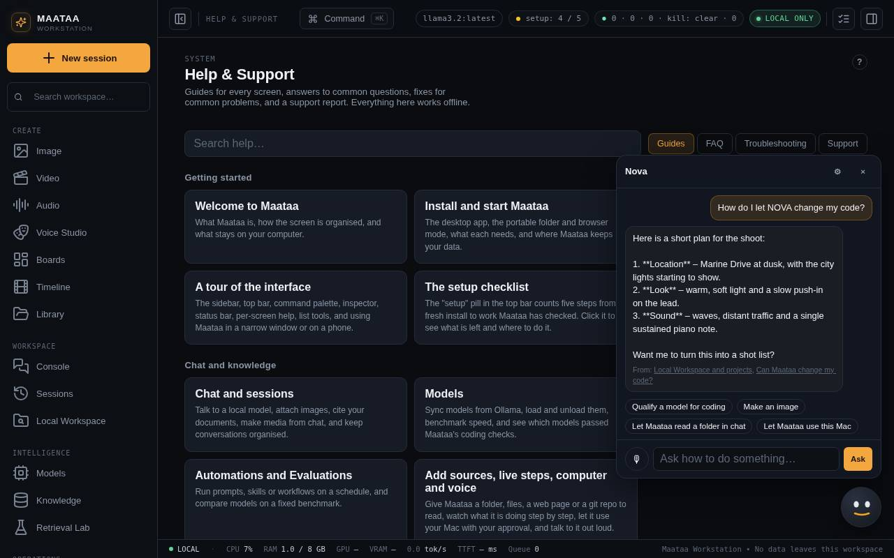
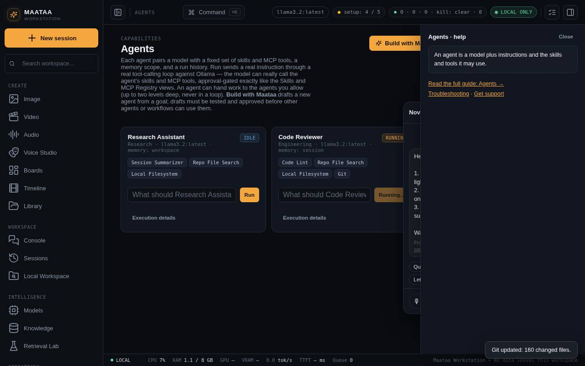
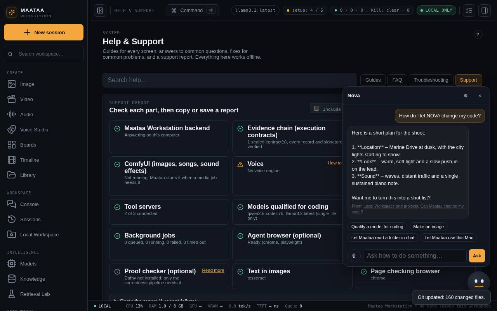

Get support
Help inside Maataa
- Help & Support (System group, or ⌘K → Help) opens this Help Center: guides, FAQ, troubleshooting and the support report, all searchable and all working offline.
- The ? next to each view title opens a short help panel for that screen. Read the full guide opens the matching article here.
- A copy of all this help is in
nova-console/docs/site/index.html, which opens in any browser without Maataa running.


Make a support report
- Open Help & Support → Support.
- Read the checks at the top: backend, Ollama, coding-qualified models, engines, tool servers, the kill switch and the agent browser. Many problems are solved there, and each red check links to its fix.
- Press Copy report to copy it, or Save report to write it to a file in the Maataa Library
supportfolder. - Read it before you send it, then add what you did, what you expected and what happened.

What the report contains
- Maataa version, Node version, macOS version and chip.
- The size of the database and the number of records in each area (not their contents).
- Ollama status and installed model names; image, video, audio and transcription engine status; connected tool servers.
- Which models passed Qualify for coding, the kill switch state and whether a resume passphrase is set, background job counts, and whether the agent browser and the Dafny proof checker are available.
- The most recent failed runs from Execution History: what kind of run, when, and the error message, shortened.
- The end of the server log, if you tick Include log tail.
Your home folder is replaced with ~. The report never includes chats, documents, prompts, media, passwords or tokens. Even so, read it before you share it.
What else to include
- Whether you used the app, the portable folder or
npm start. - The screen, the exact action and roughly when it happened.
- A screenshot of the problem, with anything private removed.
Do not send nova.db, private documents or a full log without reading it first.
Next steps
- Troubleshooting lists common problems by area.
- FAQ answers the questions people ask most.